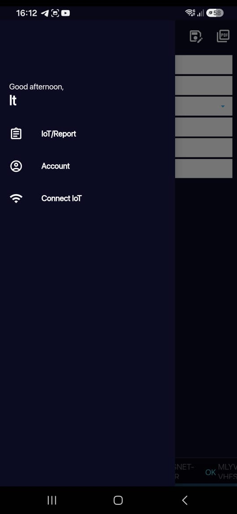
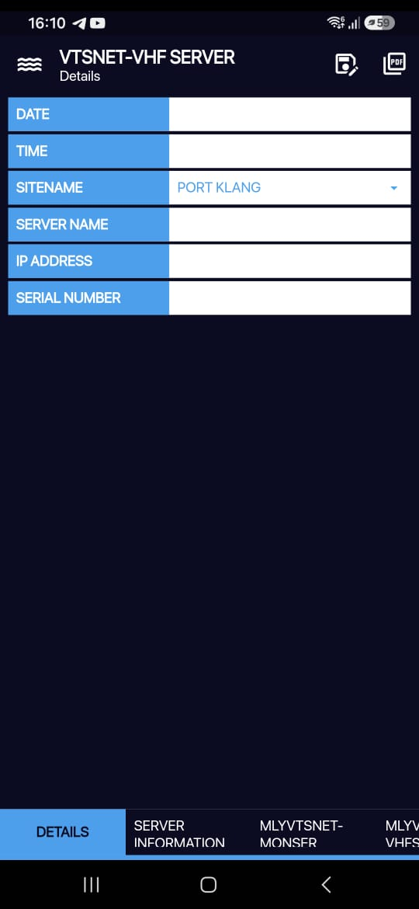

01
01DACAP 2.0 Android Application ↗
Flutter · JSONMaintained and enhanced an Android application, improving reliability through practical fixes and iterative upgrades.
IT SUPPORT · NETWORKING · SOFTWARE
Hi, I’m Nurul Awanis — an IT Support Engineer passionate about troubleshooting, application development and practical technical solutions.
Explore my work ↓ Download resume ↗ ● Open to opportunities01
● Open to opportunities0101 / ABOUT ME
With 2+ years of hands-on experience, I support users, systems and applications in fast-moving environments.
I hold a Bachelor of Computer Science (Hons.) in Data Communication & Networking from UiTM. I am passionate about continuous learning and expanding my technical skills across IT support, networking, application development and web technologies.
02 / SELECTED WORK
01Maintained and enhanced an Android application, improving reliability through practical fixes and iterative upgrades.

02Built authentication, CRUD, business logic and API communication in a collaborative GitHub project.

03Developed automated operational reports to improve efficiency, consistency and data accuracy.
03 / EXPERIENCE
Greenfinder Sdn. Bhd. · Shah Alam
Majlis Bandaraya Alor Setar